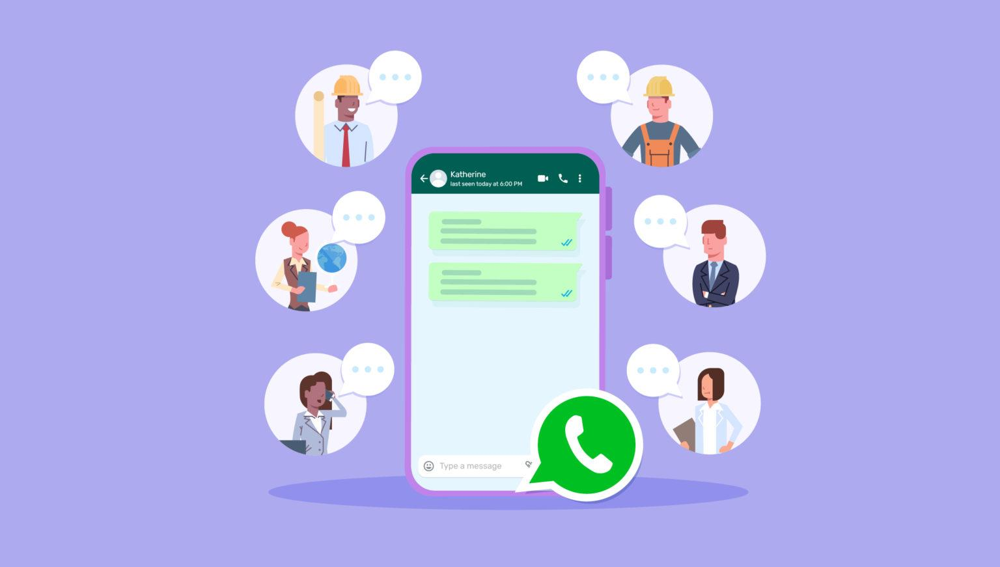

WhatsApp Marketing - The Most Underused Growth Channel for Businesses in 2026

Every business is fighting for attention on Instagram and running expensive Google ads. Meanwhile, one of the highest-converting marketing channels in the world is sitting right there - completely underutilised. It is called WhatsApp.
Let's Start With a Simple Question
When was the last time you ignored a WhatsApp message?
Exactly. You probably cannot remember - because you almost never do. WhatsApp messages get read. Almost all of them. Immediately. That single fact makes it one of the most powerful marketing tools available to any business in 2026 - and yet the vast majority of businesses are either not using it at all or using it so badly that it is actually hurting their brand.
At AdMediaX, we work with businesses to build WhatsApp marketing strategies that feel personal, drive real action, and create the kind of customer relationships that no Instagram ad ever could. This blog is going to show you exactly why WhatsApp deserves a serious place in your marketing strategy - and how to do it right.
Why WhatsApp Is a Marketing Goldmine Most Businesses Are Ignoring
Think about the platforms your business is actively investing in right now - Instagram, Facebook, Google Ads, maybe LinkedIn. These are all valuable. But here is the honest truth: on every single one of those platforms, you are renting attention. The algorithm decides who sees your content. Ad costs keep rising. Organic reach keeps shrinking. You are constantly fighting for space in a crowded, noisy feed.
WhatsApp is different. When someone gives you their WhatsApp number, they are inviting you into the most personal digital space they have. The same place they talk to their family and close friends. That level of access - when used with respect and intelligence - translates into conversion rates that social media and email simply cannot match.
WhatsApp Business vs WhatsApp Business API - What Is the Difference?
This is where most businesses get confused, so let us clear it up simply. The free WhatsApp Business app is great for very small businesses - it lets you set up a business profile, quick replies, and basic catalogues. But it has serious limitations at scale. You cannot run broadcast campaigns to large lists, you cannot integrate it with your CRM, and you cannot automate complex customer journeys.
The WhatsApp Business API - which AdMediaX helps businesses set up and manage - is an entirely different level. It allows you to send automated messages at scale, build chatbot flows, integrate with your website and CRM, run broadcast campaigns to opted-in customers, and measure everything with real data. This is where WhatsApp marketing becomes a genuine business growth engine.
6 Powerful Ways Businesses Are Using WhatsApp Marketing Right Now
Automatically follow up with every enquiry within seconds - while the lead is still warm and interested.
Remind customers who left without buying - with a personal message that converts far better than email.
Send offers, launches, and announcements to opted-in customers with open rates that make email look obsolete.
AI-powered chatbots that handle FAQs, booking, and complaints instantly - 24 hours a day, 7 days a week.
Let customers browse, ask questions, and even place orders - entirely inside WhatsApp without leaving the app.
Delivery updates, review requests, loyalty offers, upsells - all sent at the exact right moment automatically.
The One Rule That Makes or Breaks WhatsApp Marketing
Here it is - and this is non-negotiable. Only ever message people who have explicitly opted in to hear from you. WhatsApp marketing done wrong - spammy broadcasts to people who never asked for them - is not just ineffective. It will get your number banned, destroy your brand reputation, and burn through any goodwill you have built with your audience.
WhatsApp marketing done right feels like a helpful, timely, personal message from a business you already like. It adds value. It is relevant. It respects the space. And when you get that balance right, the results are remarkable - response rates and conversion rates that leave every other marketing channel far behind.
WhatsApp + AI Automation - The 2026 Combination That Changes Everything
The real power of WhatsApp marketing in 2026 comes when you combine it with AI-powered automation. Imagine this: a potential customer fills in your website enquiry form at 11pm. Within 30 seconds, they receive a personalised WhatsApp message acknowledging their enquiry, answering their most likely questions, and inviting them to book a call. No human involved. No delay. No lead going cold overnight.
Or imagine a customer who adds products to your cart but does not check out. An automated WhatsApp message goes out an hour later - friendly, helpful, maybe with a small nudge - and brings them back to complete the purchase. These kinds of automated flows, built intelligently with AI, are what AdMediaX specialises in building for our clients. The businesses using this combination in 2026 are running marketing that genuinely feels personal - at massive scale.
How to Build Your WhatsApp Marketing List the Right Way
Your WhatsApp list is only as valuable as the quality of subscribers on it. Here is how smart businesses are building opted-in WhatsApp audiences that actually convert:
- Add a WhatsApp opt-in to your website contact forms and landing pages - make it a clear, easy choice
- Use a "WhatsApp exclusive" offer - early access, a special discount, or useful content only available via WhatsApp
- Add a click-to-WhatsApp button on your Instagram and Facebook profiles and ads
- Train your sales team to move every phone enquiry onto WhatsApp for easier follow-up and nurturing
- Use QR codes in physical locations, packaging, or printed materials that open a WhatsApp chat instantly
How AdMediaX Builds WhatsApp Marketing Systems for Your Business
At AdMediaX, we do not just set up WhatsApp Business and hand you a number. We build complete WhatsApp marketing ecosystems - strategy, automation flows, AI chatbot integration, broadcast campaign management, and ongoing optimisation. We connect your WhatsApp marketing to your website, your social media, and your CRM so everything works together as one seamless system. The result is a marketing channel that runs largely on autopilot - generating leads, nurturing them, converting them, and keeping your customers engaged long after the first purchase.
Want to Turn WhatsApp Into Your Highest-Converting Marketing Channel?
AdMediaX will build your complete WhatsApp marketing strategy from scratch. Book a free consultation today. 💬
Book a Free Consultation